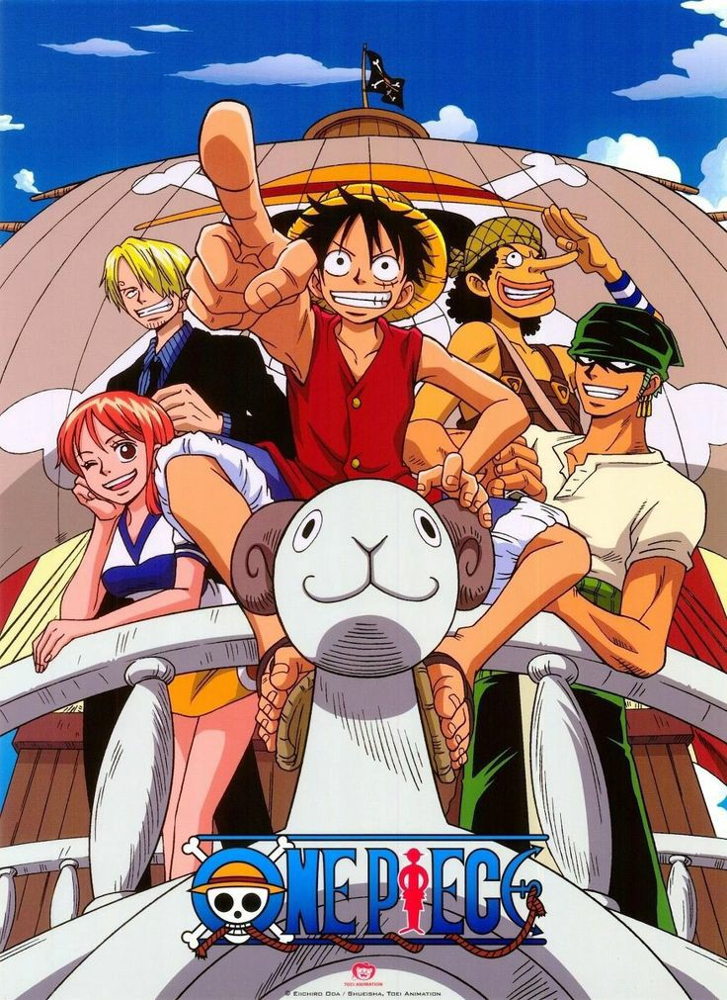
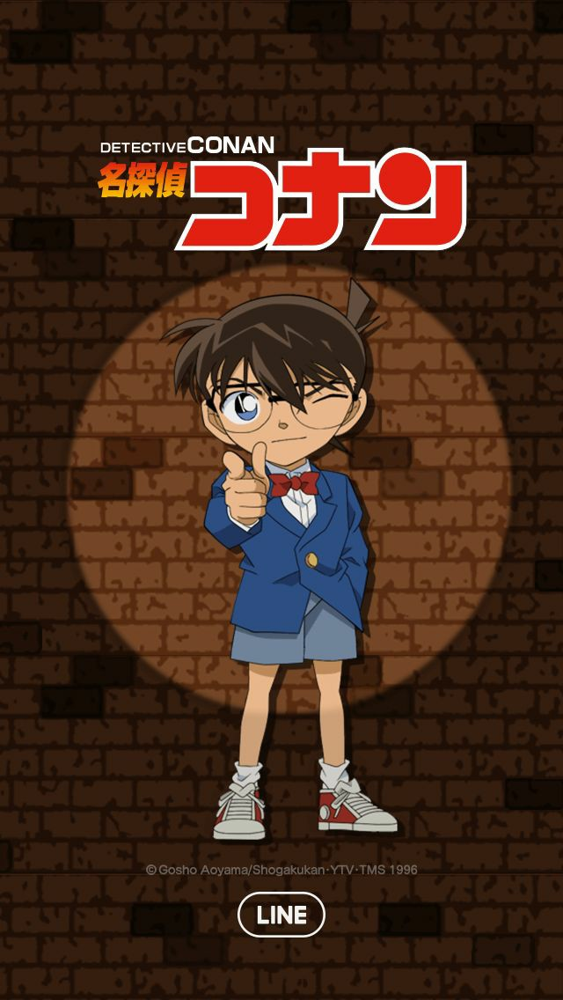
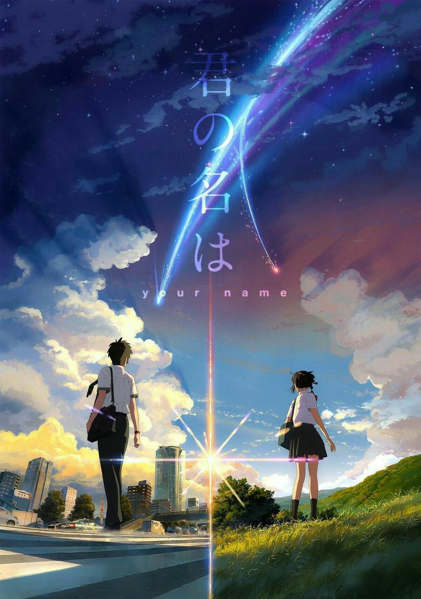

ーーー ANIME ーーー
1. ONE PIECE
One Piece adalah serial manga dan anime, karya fiksi Eiichiro Oda, yang bercerita tentang seorang remaja (Luffy) yang ingin mewujudkan cita-citanya untuk mengarungi lautan dan menjadi seorang raja bajak laut. One Piece adalah cerita tentang petualangan bajak laut mengelilingi dunia. Monkey D. Luffy adalah tokoh utama sekaligus kapten bajak laut topi jerami. Kelompok topi jerami terdiri dari Roronoa Zoro, Nami, Usopp, Sanji, Chopper, Nico Robin, Franky, Brook, dan Jinbe. Salah satu alasan utama untuk menonton serial One Piece adalah dunia yang luar biasa yang telah dibangun oleh Eiichiro Oda. Dunia ini penuh dengan pulau-pulau eksotis, karakter-karakter yang unik, dan misteri yang menarik. Dunia One Piece penuh dengan keajaiban dan keindahan yang ditampilkan dalam setiap episode, aksi dan pertarungan yang seru. One Piece memiliki banyak aksi dan pertarungan yang seru dan menghibur. Setiap karakter memiliki kekuatan dan kemampuan yang unik, sehingga pertarungan antara mereka selalu menarik untuk ditonton.
2. DETECTIVE CONAN
Detective Conan atau judul lainnya Meitantei Conan adalah serial manga anime terkenal bergenre kriminal, juga dikenal sebagai Case Closed, Komik ini ditulis oleh Gosho Aoyama. Serial ini dimulai pada tahun 1994. Serial manga telah dibuat menjadi acara televisi anime . Ini telah mengudara dari tahun 1996 hingga saat ini. Manga ini diadaptasi menjadi serial televisi anime oleh Yomiuri Telecasting Corporation dan TMS Entertainment, yang ditayangkan perdana pada Januari 1996. Anime ini menghasilkan film animasi, animasi video orisinal, permainan video, cakram audio dan episode laga hidup. Manga ini juga telah dilokalkan di wilayah lain seperti Cina, Prancis, Jerman, dan Indonesia. Shinichi Kudo (工藤 新一 , Kudō Shinichi) adalah tokoh protagonis utama dari serial Detektif Conan. Ia kemudian bernama samaran Conan Edogawa (江戸川 コナン , Edogawa Conan). Conan Edogawa berasal dari nama Arthur Conan Doyle dan Edogawa Rampo. Detective Conan mengisahkan tentang dunia kejahatan dan seorang detektif muda yang masih duduk di bangku sekolah menengah. Detective Conan mengajarkan kita untuk melatih kesabaran dan percaya pada proses.
3. KIMI NO NA WA
Kimi No Na Wa atau nama lainnya Your Name adalah sebuah film anime jepang produksi tahun 2016 bergenre fantasi yang ditulis dan disutradarai oleh Makoto Shinkai dan diproduksi oleh CoMix Wave Films. Perancangan tokoh film ini dikerjakan oleh Masayoshi Tanaka, dan penciptaan musik dibuat oleh band rock asal jepang Radwimps. Film ini dibintangi oleh Ryunosuke Kamiki, Mone Kamishiraishi, Masami Nagasawa dan Etsuko Ichihara. Kimi No Na Wa mengisahkan tentang tubuh yang tertukar secara misterius antara remaja perempuan bernama Mitsuha Miyamizu dan lelaki bernama Taki Tachibana. Mitsuha Miyamizu, seorang siswi sekolah menengah atas yang tinggal di desa fiktif bernama Itomori di daerah pegunungan Hida Prefektur Gifu, mulai bosan dengan kehidupannya di pedesaan tempat dia lahir dan berharap dapat terlahir menjadi pemuda tampan yang hidup di Tokyo pada kehidupan selanjutnya. Kemudian, Taki Tachibana, seorang siswa sekolah menengah atas yang tinggal di Tokyo, terbangun dari tidurnya dan menyadari bahwa dirinya adalah Mitsuha, yang entah bagaimana bisa masuk ke dalam tubuh Taki. Chemistry yang dibangun oleh Mitsuha dan Taki sangat kuat meskipun mereka tidak pernah bertemu. Harus diakui bahwa grafis yang ditampilkan dalam anime Your Name sangat memukau dan mendekati kata sempurna. Anda akan dibuat takjub karena visualnya yang begitu realistis dan setiap pergerakan yang dihasilkan sangat halus. Tentunya, hal ini menjadi daya tarik tersendiri bagi setiap orang yang ingin menontonnya.